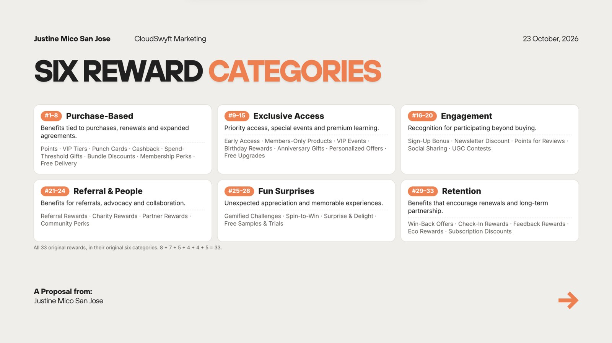

now: building ArcadeCode · interning at CloudSwyft
JustineMicoSan Jose.
IT StudentAspiring Game DeveloperTechnology Enthusiast
Hi, I'm Justine — an Information Technology student majoring in Game Development, with experience in customer service, digital documentation, quality assurance, and creative technology projects. I enjoy exploring technology, developing solutions, and turning ideas into meaningful digital experiences.
Senior High graduation, Santa Rosa Science and Technology High School.
About me
I learn best by building things.
I'm Justine Mico San Jose, a BS Information Technology student majoring in Game Development at the University of Perpetual Help System – Laguna.
A Unity level, a PHP booking system, a QA test case — that's how I learn. Alongside my studies I've worked in customer experience at Concentrix and iQor, served my community as SK Secretary of Barangay Kanluran, and now work as an IT Intern at CloudSwyft, where I test and document a live learning platform.
That mix taught me to think like a developer and a user at the same time: what the code does, and what the person on the other side of the screen actually needs. I'm still early in my career, and I treat every project and role as a chance to get better at both.
Developer mindset
Unity, C#, PHP and SQL through coursework and my capstone.
Customer-first
Frontline experience at Concentrix and iQor.
Community leader
Secretary of SK ng Barangay Kanluran since 2023.
Creative
Canva pubmats, CapCut videos and Blender 3D scenes.
A little more about me
Technology & innovation
Game development
Photography
Traveling
Volleyball
Creative digital content
Professional journey
Where I've worked.
Four roles, most of them at the same time as full-time study. Open any role to see what I do there and what it taught me.
Aug 2026Present
IT Intern
CloudSwyft Global Systems, Inc.
Current
QA audit of the LMS website with front-end and back-end test cases, plus CRM and technical documentation, process analysis and research.
What I do
Build and maintain the QA Audit Form for the LMS website
Write and run front-end and back-end test cases
Draft the outline of the LMS technical documentation
How it connects: customer-facing work taught me to think about the person using a system; SK records work taught me documentation discipline; the CloudSwyft internship puts both to use on a real product — testing it, writing it down clearly, and finding where it can improve.
Education
From Santa Rosa to Biñan.
Thirteen years of school in Santa Rosa City, from elementary to a STEM senior high. Now a Game Development major at UPHSL in Biñan, Laguna.
2023 – 2027
University of Perpetual Help System – Laguna
Bachelor of Science in Information Technology, Major in Game Development
In progressCapstone: ArcadeCodeSystems analysis & design
2017 – 2023
Santa Rosa Science and Technology High School
Junior High School and Senior High School, STEM Strand
With Honors (SHS)Top 10 (JHS)
2010 – 2017
Santa Rosa Elementary School Central II
Elementary Education
Top 10
SHS graduation, STEM strand, With Honors.
To add: diploma, report cards or other academic documents. Drop scans into assets/certificates/.
Achievements & credentials
Recognition along the way.
Academic honors and leadership roles from elementary to senior high.
Academic
With Honors
Senior High School, STEM Strand · Santa Rosa Science and Technology High School
SHS · 2023Academic
Top 10
Junior High School · Santa Rosa Science and Technology High School
JHSAcademic
Top 10
Elementary · Santa Rosa Elementary School Central II
Elementary · 2017Leadership
2nd Runner-Up
Rotary Youth Leadership Awards (RYLA)
2021Leadership
Class Secretary
Elected class officer
S.Y. 2019–2020Leadership
Class Treasurer
Elected class officer
S.Y. 2021–2022
Skills & technologies
What I work with.
No percentages. Each skill shows where I actually used it, tagged Academic (coursework and capstone) or Practical (used at work or for real audiences).
Featured projects
Selected work, 2024–2026.
Coursework, a group capstone and internship work. Each entry says what my role was and how finished it is.
My Unity work centres on ArcadeCode, our group capstone: pixel-art characters, side-scrolling movement, interactive answer objects and an in-game HUD, built as playable development builds.
Technologies
Unity, C#, pixel-art sprites
My role
UI/UX Developer (group capstone)
Status
In development
Mechanics
Character select, throw, carry/place, movement course
A low-key shelf scene with a candle, an oil lantern and a pendant lamp, lit by warm point lights and an emissive globe, with smoke simulation above the flames.
A QA and UI audit of CloudSwyft's learning-management website: map the features, write test cases, run them, log findings and outline the technical documentation.
Tools
Google Sheets (QA Audit Form), the LMS platform
My role
Built and maintain the QA Audit Form; drafting the tech doc outline
Documenting how leads move through CloudSwyft's CRM, a Power Apps canvas app, so the business team shares one clear picture of the process, from the lead workflow to the dashboard.
Covers
Lead workflow, Dataverse-related tables and fields, dashboards & KPIs
An illustrated, 10-page interactive eBook for CloudSwyft. Think Before You Trust: Kai's Online Search follows a student checking who wrote a website, when, and where its information comes from.
Format
Interactive web eBook, 10 pages, page navigation and audio narration
My role
Author
Tool
Inkbug
Topic
Checking author, date and sources; comparing sites
A 35-slide proposal for CloudSwyft Marketing on integrating the 33 Rewards System across CloudSwyft's programs, from six reward categories to a five-phase implementation roadmap.
An educational pixel-art coding game. Players run and jump through a side-scrolling city and clear each route by solving programming challenges built into the level itself.
New Campaign · Choose Your Coder — Maya or Kai, Red or White uniform.
Explore
Platform levels
Move through side-scrolling stages with keyboard and mouse controls.
Solve
Questions as objects
Answer by acting in the world: throwing, carrying, placing, moving.
Progress
Code Stars & routes
Earn Code Stars and advance the route to the next challenge.
Since August 2026 I've supported CloudSwyft's learning platform and business teams: testing, documenting and analysing how their digital tools work. It's where my coursework in systems analysis meets a live product.
Google Sheets (QA Audit Form), LMS & CRM platforms
Client data and CRM records are not published here.
Leadership & community
SK Secretary, Barangay Kanluran.
Since December 2023 I've kept the Sangguniang Kabataan's records and helped it talk to the youth of Kanluran — on paper, on social media and at events.
Records & resolutionsMinutes, official records and resolutions
Administrative documentationKeeping SK paperwork complete and organized
Social media managementAnnouncements and program updates
Pubmats & videoDesigned in Canva, edited in CapCut
Program coordinationYouth programs and barangay events
Youth developmentOrientation for newly elected SK officials, Baguio City
Beyond work
Off the clock.
Gaming is what pulled me toward game development. Design and photography keep my eye for detail sharp.
Volleyball
With the CCS volleyball team.
Creative design
Congratulatory banner, a design sample.
Photography
Noticing light and framing.
Traveling
New places, new perspectives.
Gaming
Where the interest in game dev started.
Technology
Trying new tools and platforms — this site included.
Contact
Have a project or opportunity in mind? Let's connect.
A web-based system for reserving an events venue — replacing manual booking with a single place to check dates, request reservations and manage records.
Type
PHP web application
Stack
PHP · MySQL · XAMPP
My role
Sole developer
Status
[Add status]
Objectives
Prevent double bookings
Speed up booking requests
Keep booking records organized
How it works
User
Browse venue and available dates
Submit a booking request
Track booking status
Administrator
Review incoming requests
Approve or decline
Manage schedules and records
Database
A MySQL database (managed in phpMyAdmin, run locally on XAMPP) holds users, bookings and the venue schedule.
Technologies
PHPMySQLphpMyAdminXAMPPHTMLCSSJavaScript
My role
I built the whole system myself: the interface, the booking flow, the admin side and the database.
Key learnings
CRUD operations, relational database design and role-based access for users and admins.
Screenshots
To add: website interface, booking form, admin dashboard and phpMyAdmin table screenshots. Save them in assets/projects/booking/ and add <figure class="case__img"> blocks here.
Project 02 · Game development
Unity Game Development
My Unity work is currently ArcadeCode, our group capstone. The development builds already include a character selection screen, Stage 1 programming challenges, a Level 1 movement course and a refined HUD.
Engine
Unity
Language
C#
My role
UI/UX Developer
Status
In development
Stage 1 “The First Line” · basket-throw data-type challenge.
Mechanics in the builds
Character selection with outfit variants and a live sprite preview
Walk, jump and throw to choose an answer
Movement course driven by velocity.x = input * speed;
My contribution
I'm the team's UI/UX Developer. That covers the screens and interface players use: the character selection screen, the HUD (health, Code Stars, route progress, level indicator) and the objective and code panels that explain each challenge.
Scene in the Blender viewport — candle, oil lantern and pendant lamp on a wall shelf.
Tool
Blender
Timeline
150 frames
Mood
Low-key, warm
My role
Individual project
My role
An individual project. I modeled, lit, simulated and animated the whole scene myself.
What went into it
Modeling — lantern, candle, shelf and pendant globe built as separate objects.
Lighting — warm point lights and an emissive globe create a low-key, cozy mood.
Simulation — smoke domains add drifting smoke above the flames.
Animation — 150-frame timeline with the camera placed for a close shot.
More renders
To add: final rendered stills or the exported animation, plus any other Blender models.
Project 04 · CloudSwyft internship
LMS Website QA & UI Audit
Objective: confirm that CloudSwyft's learning-management website works, reads clearly and behaves consistently, and document it so the team can act.
Process
ScopeMap pages and features to test
Write casesFront-end and back-end test cases
ExecuteRun each case and record pass/fail
Log findingsNote issues and UI inconsistencies
DocumentOutline technical documentation
My contribution
Built and maintain the QA Audit Form in Google Sheets, with a cover sheet plus front-end and back-end test cases. Drafting the outline of the LMS technical documentation, using the existing CloudSwyft website tech doc as reference.
Key learning
Good QA is about clear, repeatable steps. A well-written test case lets anyone reproduce an issue.
The QA Audit Form in Google Sheets, front-end cases.
What each case records
QIRI ID, module, test scenario, pre-conditions, test steps, expected result, status (Pass / Fail / N/A), severity and a recommendation. Cases cover the universal header and footer, branding and the landing page, checked on desktop and mobile widths.
Project 05 · CloudSwyft internship
CRM Documentation & Lead Workflows
Documenting how leads move through CloudSwyft's CRM, a Power Apps canvas app, so the business team shares one clear picture of the process.
Dashboard screen of the CloudSwyft CRM in Power Apps Studio. Lead names and emails are blurred.
Dashboard panels documented
LeadsCustomer Satisfaction ScoreYearly On-boarded ClientsResponse TimeClick-Through RateHandling Time
Dashboards & KPIs — dashboard views and key metrics
Process evaluation — gaps and improvement points in the lead workflow
Key learning
Translating a business process into clear documentation is a technical skill of its own.
Confidentiality: CRM records, client names and internal dashboards are not shown.
Project 06 · CloudSwyft internship
Evaluating the Sites That You See
Think Before You Trust: Kai's Online Search is an illustrated eBook I wrote for CloudSwyft. It teaches readers to check a website before trusting it, through a student named Kai researching study habits online.
Cover page, 1 of 10.
Format
Interactive web eBook
Length
10 pages
My role
Author
Tool
Inkbug
What the reader learns
Check who the author is
Check the date the information was published
Look at the sources behind the claims
Compare with official and trusted websites
Reader features
Page-by-page navigation, a page grid, full-screen reading and English narration.
To add: more page screenshots, or a link to the published eBook.
Project 07 · CloudSwyft internship
Beyond Transactions: 33 Rewards System
A proposal I prepared for CloudSwyft Marketing on integrating the 33 Rewards System across CloudSwyft's programs. It maps all 33 rewards into six categories and sets out how the company could test and roll them out.
Format
Canva deck, 35 slides
Audience
CloudSwyft Marketing
My role
Author
Status
Proposal

Six reward categories, all 33 rewards: 8 + 7 + 5 + 4 + 4 + 5.
Validate & MapMap all 33 rewards to programs and client segments
Pilot8–10 high-fit rewards with 3–5 willing partners
TrackConfirm what LMS, CRM and reporting tools can record
Launch & CommunicateRules page, FAQ, team training
Evaluate & ExpandQuarterly scorecard and client feedback
Each phase has a lead team, a deliverable and a gate to pass before the next one. Timing is left to management, and no LMS or CRM integration is assumed until confirmed.